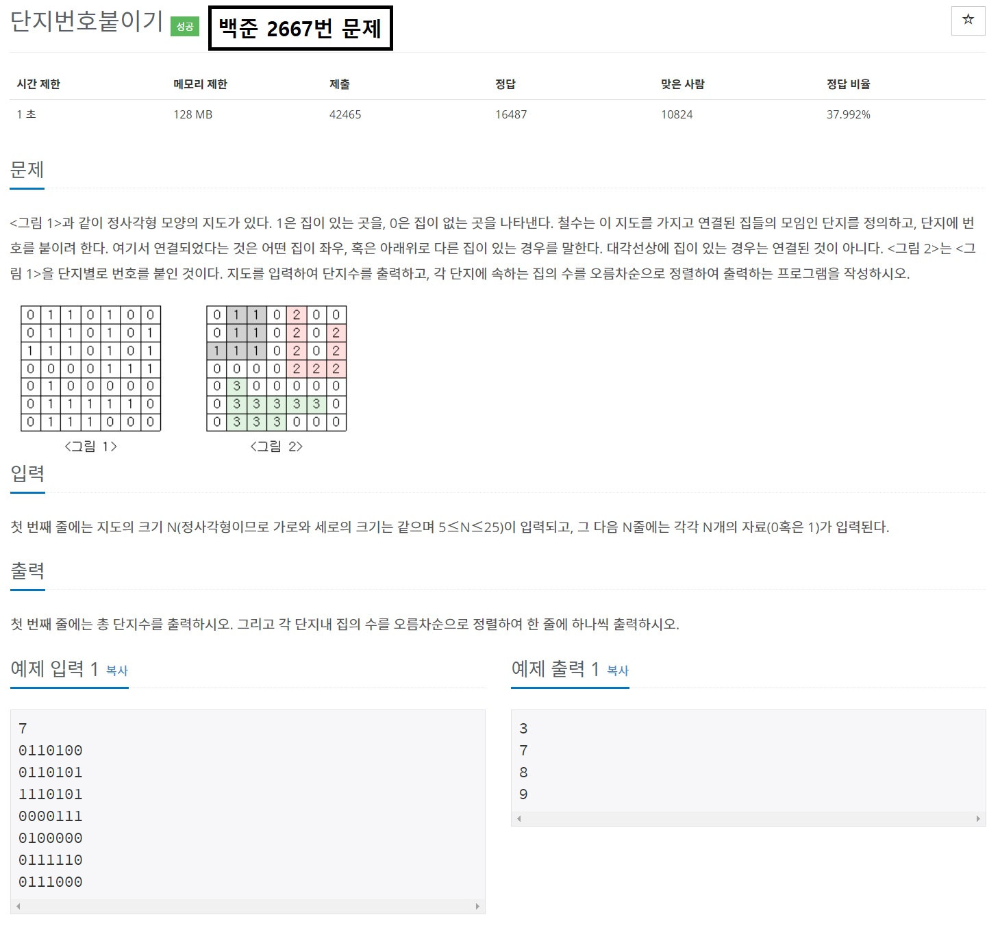

목차
- DFS(Depth-First Search)란?
- DFS문제를 출제하는 이유
- DFS를 이용하여 풀 수 있는 문제
- DFS의 구현과 주의사항
글을 시작하기에 앞서
-이 글은 [2019-10-13]에 작성된 글입니다. 실제 최신 정보와는 다를 수 있습니다.
-본 게시물은 웹 프로그래밍 실습의 중간 대체과제로 제작된 것으로, 본 블로그 만을 통해 삼성 SW 역량테스트를 준비하는 것을 권하지 않습니다.
1. DFS(Depth-First Search)란?

보물찾기를 해보신 적이 있나요? 이 곳 어딘가에 보물이 숨겨져있다는 것은 아는데, 보물이 어디에 숨겨져있는지 모르는 경우를 같이 상상해봅시다. 가지고 있는 도구가 삽과 보물지도밖에 없다면 당신은 어떤 전략을 세울 것인가요?
가능한 전략은 두 가지가 있습니다.
- 한 곳부터 끝까지 판 후 다른 곳들도 모두 파보는 전략
- 모든 곳을 한 번씩 파보는 전략
DFS, Depth-First Search(깊이 우선 탐색)은 이 두 가지 전략 중 첫 번째 전략을 의미합니다. 보물이 어디있을 지는 잘 모르지만, 한 곳씩 끝까지 파다보면 나올 것이라는 논리입니다.
2. DFS문제를 출제하는 이유

DFS는 삼성 SW 역량시험 A형에서 가장 자주 출제되는 문제 유형 중 하나입니다. 이는 DFS 문제를 출제함으로써 시험 응시자가 다음과 같은 능력이 있는지 확인할 수 있기 때문입니다.
- 반복되는 동작을 포착할 수 있는 능력
- 문제 해결에 적합한 자료구조를 고르는 능력
- 생각을 코드로 나타낼 수 있는 능력
3. DFS를 이용하여 풀 수 있는 문제
위 문제에서 1이 인접하여 있는 영역은 모두 한 가지의 단지 번호를 가집니다. 따라서, 하나씩 살펴보면서 인접하는 영역에 1이 있는지 살펴보고, 있다면 따라가면서 인접한 영역 모두에 번호를 붙여야 합니다.
이 문제에서 반복되는 행위는 단지의 번호를 붙이는 일이고, 반복은 인접한 영역에 더이상 같은 번호를 붙일 수 없게 될 때 종료됩니다.
이 문제에 사용해야 하는 자료구조는 스택입니다. 인접한 영역을 따라가면서 번호를 붙여야 하고, 번호를 모두 붙인 다음에는 다시 번호를 붙이기 시작했던 점으로 돌아가서 나머지 영역을 하나씩 확인해야 모든 영역을 확인할 수 있기 때문입니다.
4. DFS의 구현과 주의사항

DFS문제를 풀 때에 주의해야 할 점은 세 가지입니다
- DFS로 풀 수 있는 문제인가
- 중복을 어떻게 처리할 것인가
- 모든 항을 꼭 검사해야 하는가
가장 우선적으로 고려해야 할 점은 정말 이 문제가 DFS로 풀 수 있는 문제인지 확인하는 것입니다. 예를 들어, 한 지점에서 다른 지점까지 가는 거리가 모두 다를 경우, DFS로 문제를 푸는 것은 효율적이지 않을 뿐더러 정답을 도출하는 풀이가 되기 어렵습니다.
DFS문제를 풀 때에는 기본적으로 중복을 허용하지 않습니다. 특별한 케이스가 아니면 중복을 다시 검사하지 않아야 논리적으로 했던 일을 다시 하지 않는 것이 되고, 제한 시간 안에 문제를 풀 수 있습니다.
다음으로, 문제에 따라 일부 항을 뛰어 넘어야 될 수 있습니다. 모든 항을 검사할 필요가 없는 문제의 경우에는 문제의 조건을 충족하지 않는 영역을 뛰어넘어야 제한 시간 내에 문제를 풀 수 있는 경우가 있습니다.
블로그의 내용이 도움이 되었나요? 저에게 주신 의견을 바탕으로 더 나은 컨텐츠를 만들어갈게요:)